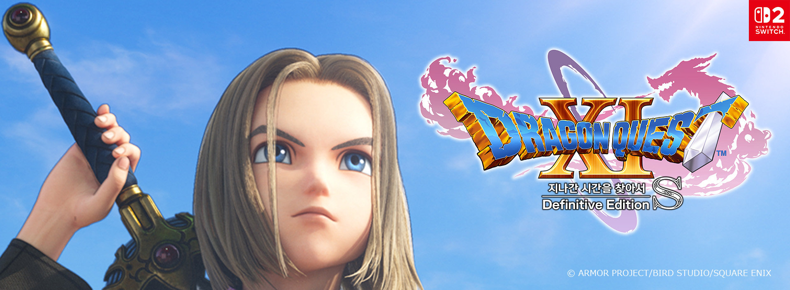
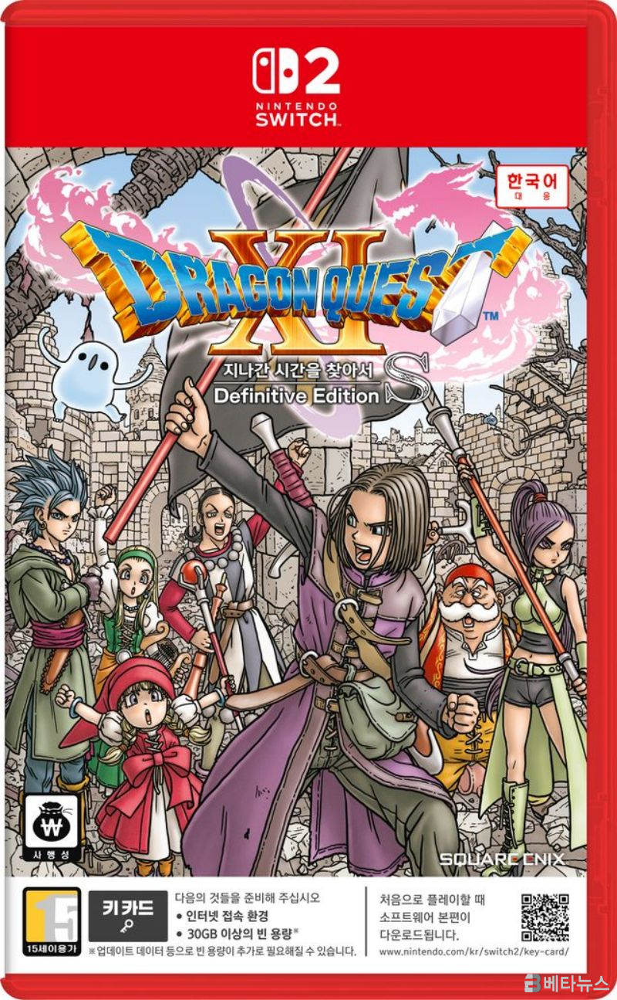

드래곤 퀘스트 XI S 지나간 시간을 찾아서 - 데피니티브 에디션, 스위치2 한국어판 발매일ㆍ사전예약 정리
안녕하세요. 영원한도시입니다.
요즘 스위치2로 예전에 못 깬 게임들 다시 붙잡고 있었는데, 이번엔 아예 제대로 된 완전판 하나가 통째로 넘어온다는 소식이 떴더라고요. 바로 '드래곤 퀘스트 XI S 지나간 시간을 찾아서 - 데피니티브 에디션'입니다. 스퀘어에닉스가 개발한 이 작품을 국내에서는 반다이남코엔터테인먼트코리아가 정식 유통을 맡고 있는데, 닌텐도 스위치2 한국어판 발매일이랑 사전예약 일정까지 나와서 오늘 정리해 보려고요. 이번 정리는 스퀘어에닉스 공식 발표 자료랑 국내 게임 매체 보도를 직접 교차 확인해서 담은 내용입니다.

보시면 주인공이 검을 치켜든 채 타이틀 로고와 나란히 잡힌 키비주얼이에요, 원작 특유의 색감이 그대로 살아있죠.
이미지 출처: 스퀘어에닉스 공식 아시아 뉴스포털 · 네이버 본문엔 받아서 재업로드 권장
1. 드래곤 퀘스트 XI S 지나간 시간을 찾아서 - 데피니티브 에디션, 완전 신작은 아닙니다
드래곤 퀘스트 XI S 지나간 시간을 찾아서 - 데피니티브 에디션은 2020년 12월 4일에 닌텐도 스위치ㆍPS4ㆍXBOX Oneㆍ윈도우10ㆍ스팀ㆍ에픽게임즈 스토어로 이미 나와 있던 완전판이고, 이번 스위치2판은 그 게임을 새로 이식하면서 기능을 하나 더 얹은 버전입니다.
정리하면, 스토리나 콘텐츠가 새로 추가된 '신작'이 아니라 기존 데피니티브 에디션에 스위치2 전용 기능이 더해진 이식판이라는 점을 먼저 짚고 가는 게 맞겠더라고요. 오랜만에 나온 확장판인 줄 알고 들어오셨다가 헷갈리시는 분들도 계실 것 같아서요(?) 원작 자체는 JRPG 팬들 사이에서 완성도 높은 시리즈로 꼽히는 작품이라, 처음 접하시는 분들도 이번 기회에 들어와 보셔도 괜찮습니다. 완전판이 이미 여러 플랫폼에 걸쳐 나와 있었다는 건, 그만큼 오랫동안 검증받은 완성도라는 뜻이기도 해서 스위치2로 처음 만나시는 분들도 크게 걱정 안 하셔도 되겠더라고요.
2. 발매일ㆍ사전예약 일정 정리
닌텐도 스위치2판 드래곤 퀘스트 XI S는 2026년 9월 24일(목) 정식 발매되고, 한국어판 패키지 예약판매는 그보다 3주 가까이 앞선 2026년 9월 2일(수)부터 시작됩니다.
| 항목 | 일정ㆍ내용 |
|---|---|
| 예약판매 시작 | 2026년 9월 2일(수) |
| 정식 발매일 | 2026년 9월 24일(목) |
| 플랫폼 | 닌텐도 스위치2 전용 |
| 정가 | 공식 미발표(구매처 공지 확인 필요) |

보시면 빨간 테두리에 'NINTENDO SWITCH 2' 로고가 큼직하게 박힌 박스아트예요, 오른쪽 위에 한국어 지원 배지도 붙어 있죠.
이미지 출처: 베타뉴스 · 네이버 본문엔 받아서 재업로드 권장
오늘이 9월 12일인데, 예약판매는 이미 시작된 상태고 정식 발매일까지는 딱 D-12 남았더라고요. 스퀘어에닉스 공식 아시아 뉴스포털 페이지를 직접 넘겨봤는데, 발매일이랑 예약 시작일이 위 표 그대로 못박혀 있었습니다. 저도 이런 일정 정리할 때마다 헷갈리는 게 예약판매 시작일이랑 실제 게임을 손에 쥐는 날이 다르다는 점인데요, 이번 건도 예약판매(9월 2일)랑 정식 발매(9월 24일) 사이에 3주 가까이 텀이 있으니까 미리 예약해 두고 발매일까지 기다리는 흐름으로 보시면 됩니다.
3. 화질 우선 모드ㆍ성능 우선 모드, 뭐가 추가됐나
이번 스위치2판부터는 화질을 우선할지, 프레임레이트를 우선할지 플레이어가 직접 골라서 플레이할 수 있는 모드가 새로 추가됩니다.
기존 데피니티브 에디션에 들어있던 콘텐츠는 그대로 다 들어가고, 여기에 스위치2 하드웨어에 맞춘 옵션이 하나 붙는 구조라고 보시면 되는데요. 다만 화질 우선 모드가 정확히 어느 해상도인지, 성능 우선 모드가 몇 프레임으로 도는지는 공식 자료 어디에도 구체적인 수치가 나와 있지 않더라고요. '화질과 성능 중에서 고를 수 있다'는 것까지만 지금 확인되는 사실이고, 정확한 수치는 발매 이후 실제 플레이 후기들이 나와봐야 알 수 있습니다. 개인적으로는 그래픽 욕심내는 쪽이라 화질 우선 모드에 눈이 먼저 가는데, 손맛이나 반응 속도를 중요하게 보시는 분들은 성능 우선 모드가 더 맞으실 수도 있을 것 같아요. 어느 쪽이 본인 플레이 스타일에 맞을지는 발매 이후 실제 후기들을 좀 더 찾아보고 정하시는 걸 추천드립니다.
설정 화면에서 두 모드 중 하나를 고르는 방식일 걸로 보이는데, 세부 수치는 아직 공개 전이에요.
4. 한국어판 패키지 특전 정리
한국어판 패키지에는 일본어ㆍ영어 음성 전환 기능과 '모험 보조 세트!!'라는 특전이 함께 들어가고, 초회 생산분에는 특별 사양 슬리브도 딸려옵니다.
- 일본어ㆍ영어 음성 전환 기능
- '모험 보조 세트!!' — 트로덴 왕국 세트
- 베로니카 전용 장비 '새끼 멧돼지 세트'
- '행복 모험 세트'(기적의 물방울 5개 + 스킬의 씨앗 5개)
- 초회 생산 한정 특전: 특별 사양 슬리브
모험 보조 세트!!는 트로덴 왕국 세트ㆍ새끼 멧돼지 세트ㆍ행복 모험 세트로 구성되는데, 실제 구성품 이미지는 아직 공개 전이에요.
베로니카 좋아하시는 분들은 '새끼 멧돼지 세트'라는 이름부터 반가우실 텐데, 초반부터 이것저것 챙겨서 시작할 수 있게 짜인 구성이라고 보시면 됩니다. 초회 생산 한정 특전인 특별 사양 슬리브는 패키지 겉면을 감싸는 구성이라 실물 소장하시는 분들한테는 눈에 띌 만한 포인트예요. 정확히 어떤 효과인지는 직접 써봐야 알겠지만, '기적의 물방울'ㆍ'스킬의 씨앗'이라는 이름만 봐도 초반에 챙겨두면 좋을 소모품 느낌이 물씬 나더라고요(?)
초회 생산분에만 들어가는 특별 사양 슬리브인데, 실물 이미지는 아직 공개 전이에요.
5. 정가는 어디서 확인하나
정가는 아직 공식적으로 딱 못박혀 나온 게 없어서, 정확한 금액은 발매를 앞두고 나올 공식 공지나 실제 판매처에서 확인하는 게 제일 정확합니다.
자주 묻는 질문
Q. 드래곤 퀘스트 11S 스위치2판, 기존 데피니티브 에디션이랑 뭐가 다른가요?
A. 콘텐츠는 기존 데피니티브 에디션 그대로이고, 여기에 화질 우선ㆍ성능 우선 모드를 고를 수 있는 기능이 스위치2판에만 새로 붙습니다. 스토리나 시스템이 새로 추가된 확장판 개념은 아니고, 하드웨어에 맞춘 옵션이 하나 더 생긴 이식판으로 이해하시면 됩니다.
Q. 일본어ㆍ영어 음성 전환은 기본 탑재인가요, 별도 구매인가요?
A. 공식 발표 자료에는 한국어판 패키지 특전으로 음성 전환 기능이 포함된다고 나와 있고, 별도 유료 상품이라는 언급은 따로 없습니다. 일본어ㆍ영어 중에 원하는 쪽으로 바꿔가며 즐길 수 있다는 점 정도만 지금은 확인되는 내용이에요.
Q. 예약판매 채널은 어디서 확인하나요?
A. 이번 정리는 국내 공식 발표ㆍ언론 보도를 기준으로 한 거라, 정확한 예약판매 채널은 국내 공식 유통사나 판매처 공지에서 확인하시는 게 정확합니다. 패키지판 기준으로 9월 2일부터 예약판매가 시작된다는 것까지는 확인됐고, 판매처별 세부 안내는 나오는 대로 다시 챙겨보겠습니다. 이 글 보시는 시점에 예약판매가 이미 시작됐을 수도 있으니, 위 표에 정리해 드린 일정으로 시작일ㆍ발매일부터 먼저 확인해 보시길 추천드립니다.
이번 스위치2판은 신작이 아니라 기존 완전판에 화질ㆍ성능 모드가 새로 붙은 이식판이라는 점만 기억해 두시면, 예약판매 시작일이랑 발매일 헷갈릴 일은 없을 거예요. 오랫동안 완성도를 인정받아 온 작품이 하드웨어만 바꿔서 돌아오는 거라, 스위치2 한 대로 예전 명작들 정리하시는 분들 목록에 하나 더 얹으셔도 좋을 것 같습니다. 발매 전에 추가로 확인되는 소식 있으면 다시 정리해서 알려드릴게요!
참고한 곳
· 스퀘어에닉스 공식 아시아 뉴스포털
· PNN
· 베타뉴스
· 경향게임스